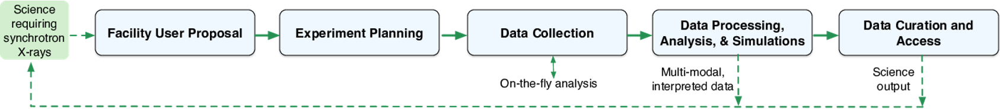
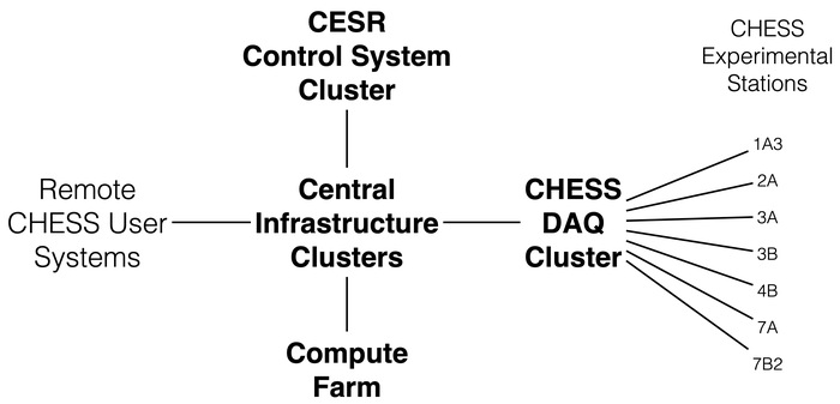
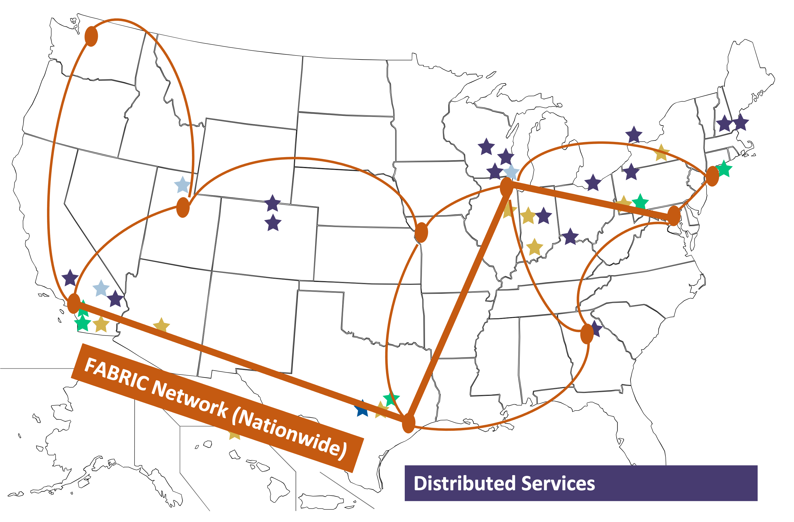
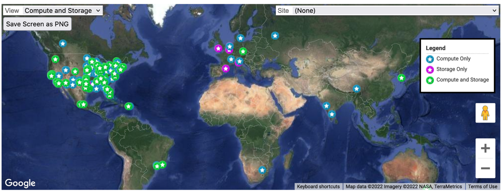
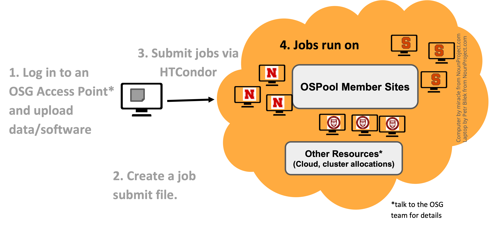

Computing with CI Ecosystem
This page is work in progress.
This module provides an overview of the various Cyberinfrastructure (CI) resources available to a CHESS researcher and more broadly to all the researchers based in the US.
Before we go into the various offerings available, it is useful to recap what we mean by CI. A widely used and accepted definition of CI by Craig A. Stewart et al is as follows:
Cyberinfrastructure consists of computing systems, data storage systems, advanced instruments and data repositories, visualization environments, and people, all linked together by software and high performance networks to improve research productivity and enable breakthroughs not otherwise possible.
As a CHESS researcher, you have access to the following CI resources that can help you with computing
- CHESS CI Resources at Cornell
- ACCESS
- PATh / OSG
Overview of CHESS Operational Workflow
Below is a high level overview of an overall chess operational workflow from the time a researcher puts in a proposal to use a beamline at CHESS to data collection from the beamline; and then it’s subsequent data processing and analysis before final data curation on the outputs is done.

CHESS’ workflow complexity is the length of time spent performing a typical data analysis. According to a CHESS survey conducted a few years back, CHESS’ workflow complexity ranges from 1 month to 24 months among survey respondents (with the average being 7.2 months). For the most complex workflows (12 months or longer), researchers often run into challenges regarding completing their data processing within the defined time constraints.
Use of National CI resources, can especially help CHESS researchers in the following areas
- Processing data (reduction, analysis, simulation, interpretation), handling large data sets, leveraging existing software and CI.
- Metadata management, Open Science/FAIR and data curation.
CHESS CI Resources at Cornell
The CLASSE cyberinfrastructure (CI) consists of an interconnected series of h high-availability server clusters (HACs), data acquisition systems, control systems, compute farms, and workstations. Most of these systems run either Scientific Linux or Windows on commodity 64-bit Intel-based hardware and are centrally managed using Puppet. The median age of key CI components is approximately 5 years, with an average refresh rate of once every 10 years. The picture below provides an overview of the CHESS CI

Getting access
In order to access the Cornell CI resources, you need a Cornell Laboratory for Accelerator-based ScienceS and Education(CLASSE) account.
CHESS users can request a CLASSE account through the CHESS User Dashboard (BeamPASS).
More info in the user guide, under “Activate your CLASSE Account”.
DAQ Cluster
DAQ Cluster is the Data Acquisition System that runs on a dedicated server cluster. Makes available to researchers about 2PB of storage for raw data collection, analysis, and simulation. Data collected at the stations written directly to the DAQ over either NFS or Samba and is immediately available for processing/analysis by users on the Compute Farm.
CHESS users can also download their data remotely using the CLASSE Globus Connect Server or via SFTP.
Compute Farm
The HPC Cluster at CHESS/CLASSE is a central resource consisting of
- central resource of 60+ enterprise-class Linux nodes (with around 800 CPUs)
- 4.5TB of memory
- uses SGE as a front-end queueing system
- supports interactive, batch, parallel, and GPU jobs
- ensures equal access to the Compute Farm for all users.
This cluster is suited for doing both HPC and HTC type jobs.
Login Node and other information
The CHESS cluster login node is to use ssh to login to lnx201.classe.cornell.edu which is the headnode of the cluster.
ssh <your CLASSE username>@lnx201.classe.cornell.eduThere is also a shared filesystem available across all the nodes in the cluster. This can be accessed at /nfs/chess/user/
A complete list of various filesystems accessible can be found at CLASSE Wiki.
Job Submission
The CHESS cluster uses SGE as the front end scheduling system to submit jobs.
In general, there are two basic steps to submitting a job
- Create a shell script containing the commands to be run
- Submit this script to the Compute Farm using the qsub command.
Below is a simple shell script myscript.sh that you can submit to the SLURM cluster if you are logged onto lnx201.
[user@lnx201 ~]$ cat myscript.sh
#!/bin/bash
echo Running on host: `hostname`.
echo Starting on: `date`.
sleep 10
echo Ending on: `date`.
#$ -q all.q
#$ -S /bin/bash
#$ -l mem_free=8GIn order to submit it to the cluster you can use qsub command
[user@lnx201 ~]$ qsub -q all.q myscript.shDetailed instructions about this can be found at CLASSE Wiki.
If you want to submit job to another queue, you can change the -q option. In order to see all the queues on the cluster, you can run the following command.
[user@lnx201 ~]$ qconf -sql
all.q
benchmark.q
chess.q
chess_fast.q
...
chess_xleap_interactive.q
interactive.qThe above output is shortened for display purposes.
ACCESS
ACCESS CI is a program established and funded by the National Science Foundation (NSF) to help researchers and educators utilize the nation’s advanced computing systems and services. ACCESS is a collection of both large and experimental HPC resources.
ACCESS provides a wide range of resources and services:
- Systems ranging from supercomputers to smaller specialized compute clusters, each with a different focus and unique set of capabilities
- Data and storage services
- Expertise to help you make effective use of resources, remove barriers, and achieve your goals
- Scientific applications
- Science gateways
Some of the resources available are listed below
| Leadership Class | |
|---|---|
| Frontera | University of Texas, Austin |
| Innovative Production Systems | |
|---|---|
| Anvil | Purdue University |
| Bridges 2 | Carnegie-Mellon University |
| Delta/ DeltaAI | U of Illinois Urbana-Champaign |
| Expanse | U of California, San Diego |
| Jetstream 2 | University of Indiana + Partners |
| Stampede 2 | U of Texas, Austin |
| Prototypes/Testbeds | |
|---|---|
| Neocortex | Carnegie-Mellon University |
| Voyager | U of California, San Diego |
| Ookami | Stonybrook University |
| NRP | U of California, San Diego |
| ACES | Texas A&M University |
| Cloud Technology Resources | |
|---|---|
| Cloudbank | U of California, San Diego |
| CloudLab | University of Utah |
| Chameleon | University of Chicago |

Of the resources above, the leadership class system and most of the Innovative Production Systems are HPC clusters, very similar to the CHESS HPC cluster at Cornell. The main difference being that they use SLURM as their frontend queueing system instead of SGE.
ACCESS User Registration
In order to use ACCESS resources, you first need to request an ACCESS user account. This account is required for you to login to the ACCESS website, manage your allocations (more on it in the next section).
Getting an ACCESS user account is fairly straightforward. Instructions for getting it can be found here. Using an existing University account when registering with ACCESS simplifies the sign-up process and enables you to log in to ACCESS using that existing account.
Getting an Allocation
To get started, you need an ACCESS project and some resource units you can spend. Your ACCESS project and resource units are what we refer to as an Allocation. An allocation is your project to use a portion of a shared resource.
Through ACCESS, you can get an allocation to use computing and data resources to accomplish your research or classroom objectives.
You can get allocation for 4 different types of projects which are listed below.
EXPLORE — Great for resource evaluation, graduate student projects,
small classes and training events, benchmarking, code development and porting, and similar small-scale uses.DISCOVER — Designed for research grants with modest resource needs, Campus Champions, large classes and training events, graduate student projects, benchmarking and code testing at scale, and gateway development.
ACCELERATE — Best for experienced users with mid-scale resource needs, consolidating multi-grant programs, collaborative projects, preparing for Maximize ACCESS requests, and gateways with growing communities.
MAXIMIZE — The choice for large-scale research activities that need more resources than the limit for Accelerate ACCESS projects.
The EXPLORE requests are easiest to get with MAXIMIZE the hardest (in terms of supporting documentation required). The EXPLORE request will get you 400,000 ACCESS credits/SUs to start with, which is enough to explore suitability of these resources for your processing needs.
More details including a detailed comparison table can be found here.
Logging to the ACCESS resource
Once, you have your allocation approved then in the Allocations portal you can assign your credits to a particular resource that you are interested in. Once that is done, the Resource Provider will contact you to setup your local HPC accounts.
Once that is done, you can * register your ssh keys to login to your account on the HPC resource.
Additionally, most of the ACCESS resources have Open OnDemand installed, that allow you to access and login to the clusters using a web front-end. Open OnDemand is an easy-to-use web portal that is being deployed on ACCESS resources to allow researchers to compute from anywhere without client software or command-line interface, and significantly speed up the time to science.
Submitting Jobs
You can login to the headnodes of these resources, and submit jobs to the SLURM clusters in a similar fashion that you submit jobs on the CHESS cluster.
Additionally, all the ACCESS resources that have an Open OnDemand install, allow you to launch Jupyter notebooks to run your analysis.
You can also use workflow systems such as Pegasus to run your analysis pipelines on ACCESS resources. One easy way to explore Pegasus workflows is to use ACCESS Pegasus.
ACCESS Support
ACCESS does provide support for researchers looking to leverage their resources. The support comes in various flavors as illustrated in the picture below.
ACCESS Support provides researchers with access to
- Tools, growing knowledge base
- Match-making with experts
- Student engagement
- Engagement from community
ACCESS provides Match services (Tier 3 and Tier 4) which connects researchers with experts to help you select the right system, run on a supercomputer, and solve basic code and research problems.

OSG and PATh Facilities
PATh and OSG make up the OSG Consortium that builds and operates a set of pools of shared computing and data capacity for distributed high-throughput computing (dHTC).
The OSG Consortium builds and operates a set of HTCondor pools of shared computing and data capacity for distributed high-throughput computing (dHTC). Each pool is organized and operated to serve a particular research community (e.g. a campus, multi-institutional collaboration, etc.), using technologies and services provided by the core OSG Team. One of these pools, known as the Open Science Pool is operated for all of US-associated open science.

Image Credit: OSG Research Facilitation Team
One of the most attractive features of using the OSPool is that it has a No Proposal, No Allocation, No Cost principle. It povides its users with fair-share access to compute and storage capacity contributed by university campuses, and government-supported supercomputing institutions.
What type of jobs are good fit for OSPool
The OSPool is made up of mostly opportunistic capacity - contributing clusters may interrupt jobs at any time. Thus, the OSPool supports workloads of numerous jobs that individually complete or checkpoint within 20 hours.
The OSG consortium provides guidance on what type of jobs are a good fit. It is replicated from the OSPool website below.
| Ideal Jobs! | Still very advantageous | Maybe not, but get in touch! | |
|---|---|---|---|
| Expected Throughput, per user | 1000s concurrent cores | 100s concurrent cores | Let’s discuss! |
| CPU | 1 per job | < 8 per job | > 8 per job |
| Walltime | < 10 hrs* | < 20 hrs* | > 20 hrs |
| RAM | < few GB | < 40 GB | > 40 GB |
| Input | < 500 MB | < 10 GB | > 10 GB** |
| Output | < 1 GB | < 10 GB | > 10 GB** |
| Software | pre-compiled binaries, containers | Most other than → | Licensed Software, non-Linux |
OSG User Registration
To get started with the OSPool, please complete the account application here. After submitting the form, you’ll receive an invitation to a new user meeting with an OSG facilitator. During the meeting, you’ll get an overview of OSG and discuss how to run your computations on the platform. Your account and project will be set up following this meeting.
Submitting jobs
Submitting jobs involves logging into one of the OSG Access points, from where you can submit a job using HTCondor or a workflow tool like Pegasus to the OSPool. Submitting the job is similar to how you submit a job on your local HPC cluster. The main difference is that you are interacting with HTCondor not SLURM or SGE.
Another important difference to keep in mind is that unlike HPC clusters, you cannot expect a shared filesystem between the login node (from where you submit the job) and the nodes on which your jobs execute. The nodes on which your jobs run are geographically distributed as illustrated in the figure below.

Image Credit: OSG Research Facilitation Team
PATh
The PATh Facility is part of a pilot project funded by the NSF Office of Advanced Cyberinfrastructure. NSF-funded researchers can apply to request credits for the PATh facility. In that aspect, PATh is also similar to ACCESS resources in that you need to apply for credits to run on these resources.
Composed of current gen hardware, the PATh facility provides users access to
- 30,000 cores and
- 36 A100 GPUs
PATh user registration can be found on the PATh website.
OS Pool vs PATh
A researcher’s experience on PATh Facility and OSG’s Open Science Pool (OSPool) compute systems is similar: both offer thousands of CPU resources, as well as GPUs, disk space for saving actively-used data, and support technologies such as containerized software and checkpointing. They also both use a HTCondor Software Suite as a job scheduling software, which specializes in managing large high-throughput workflows.
The main differences between the two are
- OSPool is open to any US-affiliated academic, non-profit, or government research projects while PATh is available to only researchers with accepted or active NSF award with selected affiliated programs.
- PATh uses compute credit system to request resources.
- On PATh researchers can request larger amounts of CPU/GPUs, more memory, disk space, and a longer runtime and are guaranteed these resources until their job completes.
Full details on these differences can be found here.